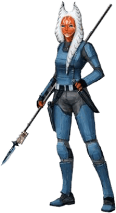

Togruta

Tratti dei Togruta
| Aumento dei punteggi caratteristica | Il punteggio di Saggezza aumenta di 2 e la Forza o la Destrezza aumentano di 1 |
| Eta' | I togruta raggiungono la maturita' intorno ai 18 anni e vivono per circa meno di un secolo |
| Allineamento | Tendente al lato chiaro della forza |
| Taglia | Media |
| Velocita' | 9m |
| Maschera Selvatica | Puoi nascondersi anche se sei parzialmente oscurato da: fogliame, pioggia fitta, nevicate, nebbia ed altri fenomeni naturali simili |
| Montral Recettivi | Ottieni percezione tellurica 9m. Sei in grado di identificare precisamente l'origine delle vibrazioni fintanto che tu e la sorgente siate sulla stessa superficie o sostanza. Percezione tellurica non puo' essere utilizzata per identificare creature volanti od incorporee |
| Cacciatore Selvatico | Sei competente nell'abilita' di Sopravvivenza |
| Linguaggi | Sai parlare, leggere e scrivere: Galattico Base e Togruti |